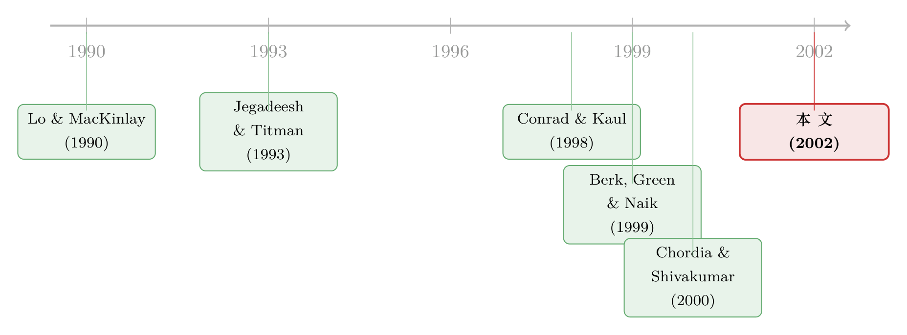

动量的利润，是「股票本来就不一样」，还是「价格真的会续命」？
本文读的是 Jegadeesh & Titman (2002, Review of Financial Studies)：Conrad and Kaul (1998) 曾用一组漂亮的实证与 bootstrap 实验「证明」动量利润几乎全部来自股票之间期望收益的横截面差异，而非收益的时间序列可预测性。这篇文章指出，那个结论是一个小样本偏差 (small sample bias) 的产物——它同时污染了 Conrad and Kaul 的回归检验和他们的 bootstrap。用无偏的方法重做之后，横截面期望收益差异几乎解释不了任何动量利润；做一个解析上可证无偏的 bootstrap，动量利润干脆掉到 0.002（实际值的 0.5%）。
1 一个让效率市场「松一口气」的解释
先把舞台搭起来。买入过去 3–12 个月的赢家、卖出同期的输家，在随后的一年里大约每月赚 1% ——这就是 Jegadeesh and Titman (1993) 记录下来的动量 (momentum) 。它在欧洲（Rouwenhorst, 1998）、在行业组合里（Moskowitz and Grinblatt, 1999）、在追溯到 1920 年代的美国市场（Grundy and Martin, 2001）里都顽固地存在。正因为它如此稳定，它成了效率市场假说头上的一根刺：一堆行为金融模型（Barberis, Shleifer, and Vishny, 1998；Daniel, Hirshleifer, and Subrahmanyam, 1998；Hong and Stein, 1999）都被它逼着诞生，去解释投资者为什么会「反应不足」或「延迟过度反应」。
但是，故事还有另一面。如果动量根本不是什么「价格会续命」的时间序列现象，而仅仅是因为有些股票天生就该赚得多呢？
这正是 Conrad and Kaul (1998) 的主张。设想一个极端世界：所有股票的收益在时间上完全独立、毫无可预测性，但它们的无条件期望收益彼此不同——有的股票期望年化 5%，有的期望 20%。那么按过去收益排序时，期望收益高的股票更容易排进赢家组合，期望收益低的更容易落进输家组合。于是，「赢家继续赢、输家继续输」就会自动出现，哪怕收益里压根没有任何时间序列的相关性。
如果这个解释成立，效率市场就可以松一口气了：动量不是异象，只是「好股票就是好股票」。Conrad and Kaul 不仅给出了实证，还配上了一系列 bootstrap 和模拟，看上去铁证如山——随机打乱、抹掉一切时间序列依赖之后的数据，照样能复制出真实数据里的动量利润。
这篇文章要做的，就是把这块「铁证」翻过来看。
2 先把动量利润拆开：Lo-MacKinlay 分解
要讲清楚分歧在哪，得先有一把共同的尺子。本文沿用 Lo and MacKinlay (1990) 提出、Conrad and Kaul 也采用的加权相对强度策略 (weighted relative strength strategy, WRSS)：每只股票在 t 时刻的权重，正比于它在排序期 t-1 的收益超出横截面均值的部分，
$$ w_{i,t} = \frac{1}{N}\left(r_{i,t-1} - \bar{r}_{t-1}\right) $$
其中 N 是股票数，\(\bar{r}_{t-1}\) 是排序期所有股票的平均收益。所有权重之和为零——这是一个零投资组合，赢家做多、输家做空。它带来的利润是
$$ \pi_t = \frac{1}{N}\sum_{i=1}^{N} r_{i,t}\left(r_{i,t-1} - \bar{r}_{t-1}\right) $$
接着，一个自然的问题是：这笔利润到底是从哪来的？把每只股票的实现收益写成「期望 + 意外」，\(r_{i,t} = \mu_i + u_{i,t}\)（\(\mu_i\) 是无条件期望收益，\(u_{i,t}\) 是意外部分），代入上式，就能把利润分解成三块。这是全文的轴心，值得逐项看清楚：
第三项 \(\sigma_\mu^2\)（cross-sectional variance of expected returns）就是争论的焦点。它的含义很直观：哪怕收益毫无时间序列依赖（前两项都为零），只要股票之间期望收益有差异，\(\sigma_\mu^2 > 0\) 就能凭空造出正的动量利润。Conrad and Kaul 主张：动量几乎全部来自这一项；本文则要证明：这一项的真实贡献微乎其微。
注意第二项和第三项的经济含义截然不同。第二项是「价格会不会续命」（时间序列可预测性，是行为模型和效率市场之争的真正战场）；第三项只是「股票本来就不一样」（横截面静态差异，与市场是否有效无关）。Conrad and Kaul 想把动量整个塞进第三项，等于把这场争论判了「无效」。
3 真正关键的一步：被测量误差吹大的 \(\sigma_\mu^2\)
问题出在哪？出在期望收益看不见。Conrad and Kaul 只能用每只股票的历史平均收益来估它：
$$ \hat{\mu}_i = \frac{1}{T_i}\sum_{t=1}^{T_i} r_{i,t} $$
然后用这些 \(\hat\mu_i\) 的横截面方差 \(\sigma^2_{\hat\mu}\) 去当 \(\sigma_\mu^2\) 的估计。听上去理所当然，但这里藏着全文的命门。把估计写成真值加误差，\(\hat\mu_i = \mu_i + \epsilon_i\)，由于样本均值是无偏的，\(E[\epsilon_i]=0\)；可是方差不会因为无偏就老实——
$$ \sigma^2_{\hat\mu_i} = \sigma^2_{\mu_i} + \sigma^2_{\epsilon_i} $$
也就是说，用 \(\sigma^2_{\hat\mu}\) 去估 \(\sigma_\mu^2\)，系统性地高估了，多出来的正是估计误差的方差 \(\sigma^2_{\epsilon_i}\)。而这个误差有多大？本文用一张图把它摊开（Figure 1，全 NYSE/AMEX 样本年化平均收益的分布）：将近 20% 的股票估出来的期望收益是负的，还有不少股票的平均年收益超过 100%。没有人会真的相信一只股票的事前期望收益是 +120% 或 −50%——这些极端值几乎全是测量误差。误差越大，\(\sigma^2_{\hat\mu}\) 就被吹得越离谱。
数字上有多离谱？本文报告，全样本的 \(\sigma^2_{\hat\mu}\) 是 1.721×10⁻²，是 WRSS 动量利润（0.366×10⁻²）的 4.72 倍。如果横截面期望收益方差真有这么大，我们本该观察到比现实大得多的动量利润。把样本限制到至少有五年数据的公司后，这个倍数降到 1.29——误差小了，估计值也跟着缩水。估计值随着精度变化而剧烈漂移，本身就说明它量的主要是噪声，而不是真实的横截面差异。
4 反转：你不需要方差无偏，只需要均值无偏
讲到这里，似乎陷入了死胡同：既然 \(\sigma^2_{\hat\mu}\) 永远是被污染的，那 Equation (3) 的分解还能不能用来定量？
但真正关键的一步在于一个被 Conrad and Kaul 忽略的细节：要剥离横截面期望收益的贡献，我们根本不需要 \(\sigma^2_{\hat\mu}\) 是无偏的——只需要 \(\hat\mu_i\) 本身是无偏的就够了。 而在「期望收益恒定」这个 Conrad and Kaul 自己接受的假设下，样本均值恰恰是 \(\mu_i\) 的无偏估计。
于是本文的做法干净利落：对每只股票，在持有期收益里减掉它的 \(\hat\mu_i\)，得到「调整后收益」\(r^{ab}_{i,t} = r_{i,t} - \hat\mu_i\)，再用它重算动量利润。如果动量真的全来自横截面期望收益差异，减掉之后利润就该归零；如果减掉后利润纹丝不动，那第三项的贡献就接近于零。
为了不让排序期本身造成机械的偏差，本文用了三种互不重叠的窗口来估 \(\hat\mu_i\)：排序前期 (preranking)、持有后期 (postholding，跳过持有期后的 12 个月)、以及二者合并。结果（Table 2，1965–1996 样本）令人印象深刻：
- 不做任何调整，动量利润
3.33%（每六个月，占多头头寸比例），t = 2.94； - 用排序前期均值调整：
3.30%； - 用持有后期均值调整：
3.46%； - 用前后合并均值调整：
3.91%，t = 3.30。
换句话说，把横截面期望收益差异整个减掉之后，动量利润非但没有消失，若有变化反而是略微增大。这和 Jegadeesh and Titman (1993)、Fama and French (1996) 早先发现「按 CAPM 或三因子调整后动量略升」的结论一致。横截面期望收益差异，对动量利润的贡献小到可以忽略。
这一步的精妙之处，正是它把 Conrad and Kaul 的逻辑反将一军：Conrad and Kaul 用 \(\sigma^2_{\hat\mu}\) 大于动量利润，来论证「期望收益差异足以解释动量」；本文指出 \(\sigma^2_{\hat\mu}\) 大，恰恰是因为它装满了测量误差，而真正干净的检验（减掉无偏的 \(\hat\mu_i\)）说明它什么也解释不了。
5 那一组「铁证」般的 bootstrap，错在哪？
最后一个谜团，是 Conrad and Kaul 那组看似无懈可击的 bootstrap：他们把每只股票的月收益有放回地 (with replacement) 随机抽取、重新排列，抹掉一切时间序列依赖，结果打乱后的数据竟然复制出了和真实数据相当的动量利润。这难道不正说明动量与时间序列无关吗？
本文的诊断是：这个 bootstrap 犯的，是和它的回归检验一模一样的小样本偏差。 关键就在「有放回」三个字。有放回抽样时，同一个收益观测值可以同时被抽进排序期和持有期。想象一只股票某个月实现了 1000% 的极端收益：任何一次抽到它，它都会因为这个超高收益排进赢家组合；而由于收益序列足够长，这个观测值在相邻的六个月窗口里被再次抽到并不罕见——于是模拟里就出现了「赢家在持有期继续高收益」的假象。
把这个直觉写成解析式：有放回时，任一观测被抽中的概率是 \(1/T_i\)，所以给定原始数据，持有期抽到的收益的期望就是样本均值本身，
$$ E_{rep,t}\!\left(r^{*}_{i,t}\,\middle|\,r_{i,t},\,t=1,\dots,T\right) = \frac{1}{T_i}\sum_{j=1}^{T_i} r^{*}_{i,j} = \hat{\mu}_i $$
进而，有放回 bootstrap 的动量利润期望（在「平均序列自协方差为零」的原假设下）正好是
$$ E\!\left(\pi^{*}_{rep,t}\,\middle|\,\cdot\right) = \overline{\hat\mu_i^2} - \bar{\mu}^2 = \sigma^2_{\hat\mu} $$
看到了吗？有放回 bootstrap 的期望利润，恰恰等于那个被测量误差吹大的 \(\sigma^2_{\hat\mu}\)——和回归检验里的偏差源一字不差。这就解释了一个一直没人点破的巧合：Conrad and Kaul 在他们 Table 2 报告的横截面方差 0.387×10⁻²，和他们 Table 3 里 bootstrap 出来的六个月动量利润 0.378×10⁻²，为什么会近乎相等。不是巧合，是同一个偏差的两次现身。
于是本文给出修正方案：把 bootstrap 改成无放回 (without replacement) 抽样——这样排序期和持有期就不会共享同一个观测，机械偏差被掐断。结果（Table 3，1965–1997）一目了然：实际数据的动量利润是 0.366（t = 3.30），而无放回模拟里只剩 0.002（t = 0.05），仅相当于实际利润的 0.5%。Conrad and Kaul 的 bootstrap「奇迹」，可以整个归因于小样本偏差。
6 文献脉络
把这条线索捋一遍。最早，Jegadeesh (1990) 和 Lehmann (1990) 记录了短期反转，Lo and MacKinlay (1990) 为研究反转的来源提出了那把分解利润的尺子——本文用的正是同一把尺子，只是把镜头对准了第三项而非前两项。接着，Jegadeesh and Titman (1993) 记录了中期动量，把战火引向效率市场。
然后，关于「横截面期望收益差异能否制造动量」的想法重新升温：Berk, Green, and Naik (1999) 从理论上、Chordia and Shivakumar (2000) 从实证上，探讨了时变期望收益生成的动量；而 Conrad and Kaul (1998) 走得最远，主张是无条件期望收益的横截面离散度解释了几乎全部动量。本文正是对 Conrad and Kaul 这一支的直接清算——它不否认分解框架，而是指出其估计被小样本偏差污染。

它和另一条「动量到底由谁驱动」的实证线索互为呼应。本博客里，关于把动量利润拆成连续性/符号/季节、以及「赢家输家是否在抄同一张作业」的讨论，可参见《动量到底是「谁」在续命？》与《负的协方差，凭什么就证明了「过度反应」？》；关于动量利润在交易成本与流动性面前是否「纸面富贵」，可参见《动量利润的「纸面富贵」》和《换一把尺子，一半的动量利润就消失了》。本文清掉的是「横截面期望收益」这一条解释路径，那几篇清的是「实现 vs 可交易」这另一条路径——合起来，动量的稳健性才被逼到墙角。
7 评论与延伸（Q&A + 研究方向）
(a) 几个可能的疑问
Q：本文不是也承认 \(\sigma^2_{\hat\mu}\) 被高估了吗？那它凭什么还敢用样本均值做调整？
关键区别在于「无偏」的对象不同。本文从不要求 \(\sigma^2_{\hat\mu}\) 无偏（它确实不无偏），只要求点估计 \(\hat\mu_i\) 无偏。从每只股票收益里减掉一个无偏的 \(\hat\mu_i\)，就能把横截面期望收益的贡献剥离干净，无论方差被污染到什么程度。这正是它绕开 Conrad and Kaul 死角的巧劲。
Q：「期望收益恒定」这个假设站得住吗？如果期望收益其实时变呢？
这是本文识别的真正软肋。它的无偏性建立在 Conrad and Kaul 自己接受的「无条件期望收益恒定」之上。如果期望收益像 Berk-Green-Naik 或 Chordia-Shivakumar 说的那样时变，样本均值就不再是当期期望收益的无偏估计，调整就不再干净。但本文的目标很克制：它只反驳 Conrad and Kaul 的无条件横截面假说，并明确把时变期望收益归为另一支问题。
Q：第二项（个股自相关）为正，能直接当作行为偏差的证据吗？
不能直接等同。本文证明的是「不是横截面期望收益差异」，这把利润的来源推回到时间序列项；但时间序列可预测性既可由行为偏差产生，也可由时变风险溢价产生。本文没有、也无意在这两者之间裁决。
Q：为什么持有后期 (postholding) 估计要特意跳过持有期后的 12 个月？
因为要解释的就是持有期收益。若用紧贴持有期的收益去估期望收益，会把待解释的对象混进解释变量，造成机械相关。跳开 12 个月，是为了让 \(\hat\mu_i\) 与持有期收益尽量独立。
Q：有放回和无放回，差别真有这么大吗？听上去像技术细节。
差别是决定性的：实际利润
0.366vs 无放回模拟0.002，后者只有前者的 0.5%、t 值 0.05。整个「打乱数据也有动量」的奇观，就栖身在「同一观测能否同时落进排序期和持有期」这一个细节里。它提醒我们，bootstrap 的设计必须匹配原假设的结构，否则会把偏差当成信号。
Q：这是否意味着动量一定是市场无效的证据？
不一定。本文只关掉了「横截面静态差异」这一扇门，把解释推回到收益的时间序列可预测性。那扇门后面，既可能站着行为偏差，也可能站着某种本文未建模的时变风险。本文是排除法的一步，不是终局。
(b) 几个可能的研究问题与提案
1. 把同样的「无放回 bootstrap」纪律搬到公司债动量上。 - 【经济故事】公司债也有动量，但债券收益里掺着大量来自评级、久期、流动性的横截面期望收益差异，比股票更容易把动量「解释」成静态差异。本文的诊断在债市可能更尖锐。 - 【可行性】中。数据用 TRACE + 债券特征即可；难点是债券交易稀疏、收益序列短，小样本偏差本身更严重——这既是隐患也是卖点。识别上直接复刻本文的均值调整与无放回 bootstrap。
2. 外资持有人是不是动量的「横截面噪声」放大器？ - 【经济故事】若某些股票因外资可投资度而长期享有不同的期望收益，按本文逻辑，这会进入 \(\sigma_\mu^2\) 而非时间序列项。可检验外资持股是否系统性地抬高了 \(\sigma^2_{\hat\mu}\) 的测量误差。 - 【可行性】中。需跨国个股收益 + 可投资度（如 S&P/IFC）数据；识别可借「可投资度变更」做准自然实验。诚实地说，把「期望收益差异」与「时变流动性溢价」分开很难，结论可能偏描述性。
3. 测量误差校正：用收缩估计 (shrinkage) 替代样本均值，重估 \(\sigma_\mu^2\) 的真实大小。 - 【经济故事】本文证明 \(\sigma^2_{\hat\mu}\) 高估了真值，但没给出真值多大。用 James-Stein 式收缩或贝叶斯层级模型，或许能更精确地框定横截面期望收益方差的上界。 - 【可行性】高。纯方法论 + CRSP 数据即可，无需新数据；风险在于收缩的先验设定会影响结论，需要做敏感性分析。
4. 把同一套小样本偏差诊断推广到「特征—收益」类策略的 bootstrap。 - 【经济故事】很多因子研究用有放回 bootstrap 做显著性检验。本文揭示的偏差机制可能在「排序期与评估期共享观测」的任何策略里复发，值得系统排查因子动物园里有多少显著性是偏差喂出来的。 - 【可行性】高。属于复制+方法审计，数据现成；价值在于把一个被忽视的偏差源做成可推广的检验清单。
8 参考文献与我的判断
我的判断是：这是一篇典型的「四两拨千斤」式论文——它没有引入新数据、没有提出新模型，只是把对手的统计程序拆开，指出回归检验和 bootstrap 共用了同一个小样本偏差，再用一个绝妙的观察（要剥离横截面贡献只需均值无偏、不需方差无偏）把问题一锤定音。0.366 对 0.002 的对比，干净得近乎残忍。它的真正贡献，是把动量之争的焦点从「股票本来就不一样」彻底拨回到「价格会不会续命」，从而保住了动量作为效率市场挑战者的地位。
对识别的担忧只有一处，但很要害：整套论证依赖「无条件期望收益恒定」。一旦期望收益时变，样本均值的无偏性就失效，Berk-Green-Naik 和 Chordia-Shivakumar 那条时变期望收益路线并未被本文触及——本文很诚实地把它划在了射程之外。后续我最想看到的，是把时变期望收益也纳入同一个无偏检验框架：在允许 \(\mu_{i,t}\) 随状态变化的前提下，重新丈量横截面与时间序列两项的贡献。那才是给动量来源下定论所缺的最后一块拼图。
参考文献
Barberis, N., A. Shleifer, and R. Vishny (1998). A Model of Investor Sentiment. Journal of Financial Economics 49, 307–343.
Berk, J., R. Green, and V. Naik (1999). Optimal Investment, Growth Options, and Security Returns. Journal of Finance 54, 1553–1607.
Chordia, T., and L. Shivakumar (2000). Momentum, Business Cycle and Time Varying Expected Returns. Working paper, London Business School.
Conrad, J., and G. Kaul (1998). An Anatomy of Trading Strategies. Review of Financial Studies 11, 489–519.
Daniel, K., D. Hirshleifer, and A. Subrahmanyam (1998). Investor Psychology and Security Market Under- and Overreactions. Journal of Finance 53, 1839–1886.
Fama, E., and K. French (1996). Multifactor Explanations of Asset Pricing Anomalies. Journal of Financial Economics 51, 55–84.
Grundy, B. D., and S. J. Martin (2001). Understanding the Nature of Risks and the Sources of Rewards to Momentum Investing. Review of Financial Studies 14, 29–78.
Hong, H., and J. Stein (1999). A Unified Theory of Underreaction, Momentum Trading and Overreaction in Asset Markets. Journal of Finance 54, 2143–2184.
Jegadeesh, N. (1990). Evidence of Predictable Behavior of Security Returns. Journal of Finance 45, 881–898.
Jegadeesh, N., and S. Titman (1993). Returns to Buying Winners and Selling Losers: Implications for Stock Market Efficiency. Journal of Finance 48, 65–91.
Jegadeesh, N., and S. Titman (1995). Overreaction, Delayed Reaction and Contrarian Profits. Review of Financial Studies 8, 973–993.
Lehmann, B. (1990). Fads, Martingales and Market Efficiency. Quarterly Journal of Economics 105, 1–28.
Lo, A., and A. C. MacKinlay (1990). When are Contrarian Profits Due to Stock Market Overreaction? Review of Financial Studies 3, 175–208.
Moskowitz, T., and M. Grinblatt (1999). Does Industry Explain Momentum? Journal of Finance 54, 1249–1290.
Rouwenhorst, K. G. (1998). International Momentum Strategies. Journal of Finance 53, 267–284.